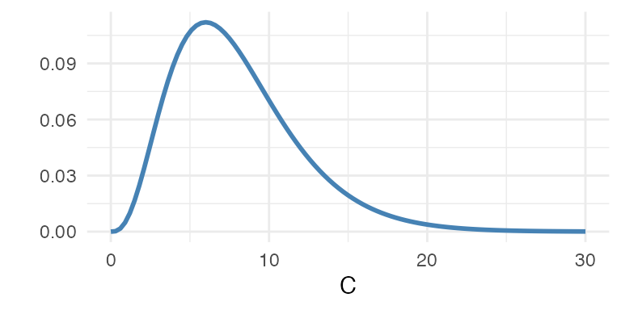
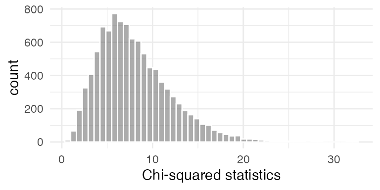

| happy | far below average | below average | average | above average | far above average | Total |
|---|---|---|---|---|---|---|
| not too happy | 50 | 123 | 120 | 33 | 4 | 330 |
| pretty happy | 64 | 350 | 602 | 253 | 24 | 1293 |
| very happy | 39 | 121 | 319 | 190 | 25 | 694 |
| Total | 153 | 594 | 1041 | 476 | 53 | 2317 |
23: Chi-Squared Tests
Stat250 S25
Example: The General Social Survey (GSS) is a sociological survey used to collect data on demographic characteristics and attitudes of residents of the United States. We’ll consider two survey questions:
- Compared with American families in general, would you say your family income is far below average, below average, average, above average, or far above average?
- Taken all together, how would you say things are these days—would you say that you are very happy, pretty happy, or not too happy?
H_0
H_A
Expected table under \(H_0\)
| happy | far below average | below average | average | above average | far above average |
|---|---|---|---|---|---|
| not too happy | 21.79111 | 84.60078 | 148.2650 | 67.79456 | 7.548554 |
| pretty happy | 85.38153 | 331.48123 | 580.9292 | 265.63142 | 29.576608 |
| very happy | 45.82736 | 177.91800 | 311.8058 | 142.57402 | 15.874838 |
How was this table computed?
Test Statistic:
When \(H_0\) is true, \(C \dot \sim\) ___________________

3 ways to find p-values:
- “By hand”
sum((observed - expected)^2/expected)
> [1] 128.0785
1-pchisq(sum((observed - expected)^2/expected), df = (3-1)*(5-1))
> [1] 0chisq.testwith vectors
chisq.test(happy2018$happy, happy2018$finrela)
>
> Pearson's Chi-squared test
>
> data: happy2018$happy and happy2018$finrela
> X-squared = 128.08, df = 8, p-value < 2.2e-16chisq.testwith table
chisq.test(observed)
>
> Pearson's Chi-squared test
>
> data: observed
> X-squared = 128.08, df = 8, p-value < 2.2e-16Permutation test
Store the data in a table: one row per observation, one column per variable.
Calculate a test statistic for the original data.
Repeat
- Randomly permute the rows in one of the columns.
- Calculate the test statistic for the permuted data.
Calculate the \(p\)-value as the fraction of times the random statistics exceed the original statistic.
- Drop any missing values
df <- happy2018 |> drop_na(happy, finrela)- Calculate the observed test statistic
observed <- chisq.test(happy2018$happy, happy2018$finrela)$statistic- Construct the permutation distribution
set.seed(55057)
N <- 10^4 - 1
result <- numeric(N)
for(i in 1:N) {
finrela_perm <- sample(happy2018$finrela)
result[i] <- chisq.test(happy2018$happy, finrela_perm)$statistic
}
- Find p-value
(sum(result >= observed) + 1) / (N + 1)
> [1] 1e-04Alternatively, use a shortcut to the permutation test:
chisq.test(happy2018$happy, happy2018$finrela, simulate.p.value = TRUE)
>
> Pearson's Chi-squared test with simulated p-value (based on 2000
> replicates)
>
> data: happy2018$happy and happy2018$finrela
> X-squared = 128.08, df = NA, p-value = 0.0004998Use a permutation test if the expected counts aren’t large enough
Example: Some people think that children who are the older ones in their class at school naturally perform better in sports and that these children then get more coaching and encouragement as they get older. Could that make a difference in who makes it to the professional level in sports? Below is the birth month of 1478 major league players born since 1975, along with the national birth percentage across the same years.
| Month | 1 | 2 | 3 | 4 | 5 | 6 | 7 | 8 | 9 | 10 | 11 | 12 |
|---|---|---|---|---|---|---|---|---|---|---|---|---|
| Obs | 137 | 121 | 116 | 121 | 126 | 114 | 102 | 165 | 134 | 115 | 105 | 122 |
| Birth % | 8% | 7% | 8% | 8% | 8% | 8% | 9% | 9% | 9% | 9% | 8% | 9% |
- Write out an appropriate null and alternative hypothesis
- Calculate the expected counts for each cell under the null hypothesis
- Compute the chi-square test statistic
- Compute the p-value
- Draw a conclusion in context